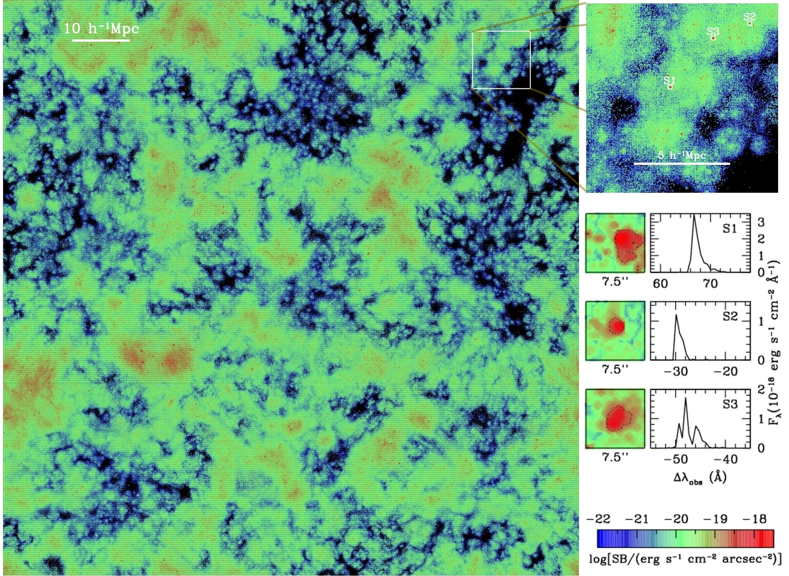
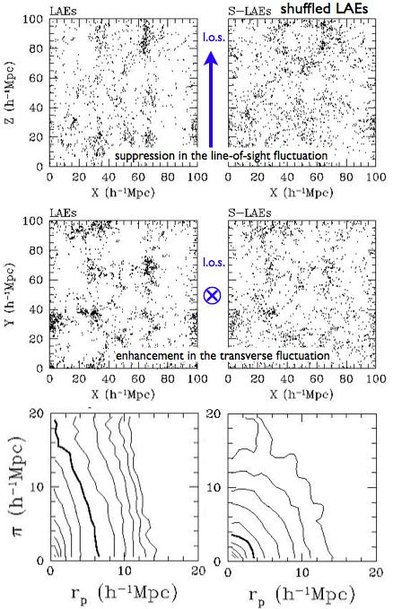
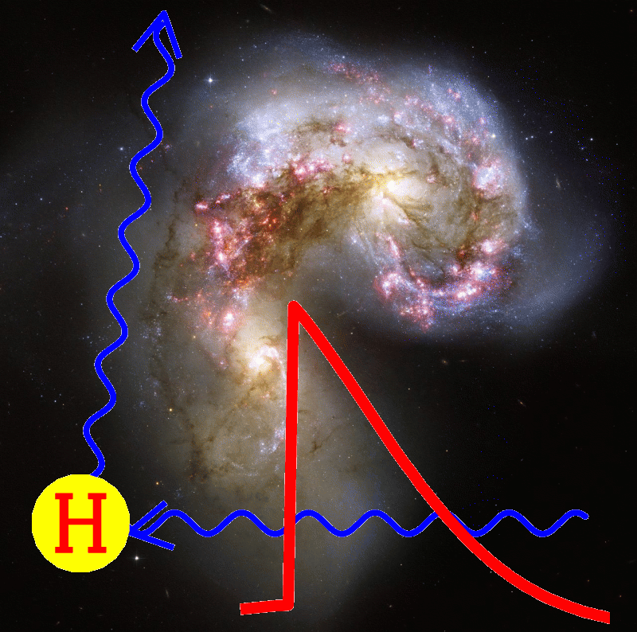

Zheng et al. 2010: Statistics of Spectra and Luminosity
Zheng et al. 2011a: New Effects in Galaxy Clustering
Zheng et al. 2011b: Extended Lyman-Alpha Emission around Star-forming Galaxies
Highlights:
-
It is the first time that realistic radiative transfer modeling of LAEs is
performed with a large, state-of-the-art cosmological reionization simulation,
which allows us to make statistical comparisons to observed LAEs and to
make predictions that can be tested with ongoing and forthcoming surveys.
-
Observed Lya emission from LAEs is found to be coupled with circumgalactic
and intergalactic environments through radiative transfer.
-
The model provides natural explanations to an array of observed properties of
LAEs, including morphology, size, Lya spectra, Lya and UV luminosity functions,
and Lya equivalent width distribution.
-
The model predicts new effects in galaxy clustering caused by radiative
transfer selection: suppression of line-of-sight fluctuation and
enhancement of transverse fluctuation in the spatial distribution of LAEs,
which lead to anisotropic clustering.
-
The model predicts extended Lyman-alpha emission around high-redshift star-forming galaxies, including Lyman break galaxies and Lyman-alpha emitters,
which is on the verge of being detected with deep narrowband photometry from
large ground-based telescopes.
Lyman-alpha emitters (LAEs) are an interesting population of high-redshift
galaxies in a phase of star formation. Since these galaxies can be efficiently
detected at high redshifts, they are promising probes of reionization and
cosmology. The primary technique to find them relies on detecting their strong
Lya emission, which is converted from ionizing photons emitted
by massive stars. Lya photons from LAEs would experience a large number of
resonant scatterings along the way to reach us. To correctly understand the
observed properties of LAEs and use LAEs as cosmological probes, radiative
transfer of Lya photons has to be taken into account.
We combine a state-of-the-art cosmological reionization simulation and a Monte
Carlo Lya radiative transfer code to model LAEs at z~5.7.
The model introduces Lya radiative transfer as the key factor in
transforming the intrinsic Lya emission properties into the observed ones.
Here is a plot showing the surface brightness distribution of Lya emission from
our model for LAEs in a slice (with thickness 33.3Mpc/h) of the simulation box.
The top-right panel shows a zoomin of the region marked by a white square
on the left. The middle-right panels show the images and spectra for a few
model LAEs.


On the left is a plot illustrating the radiative transfer selection effect on
the spatial distribution and clustering of LAEs. The line-of-sight direction
is along Z axis.
The left column is for a sample
of LAEs and the right column is for a control sample (shuffled LAEs) of the
same number density. The control sample is supposed to eliminate the
environment-dependent Lya radiative transfer effect.
From the comparison of
left and right panels, we see that the radiative transfer selection leads to
suppression in the line-of-sight fluctuation (top panels) and enhancement in
the transverse fluctuation (middle panels).
The 3D two-point correlation
function (bottom-left panel) of LAEs show a distinct line-of-sight elongation
pattern. The predicted anisotropic clustering of LAEs is a real-space effect,
which is opposite to and much stronger than the linear redshift-space
distortion (a.k.a. the Kaiser effect). The effect is also different from
the nonlinear redshift-space distortion (Fingers-of-God effect), which only
shows up on small scales (e.g., smaller than about 1Mpc).
In addition, selection caused by radiative transfer also introduces
scale-dependent bias in LAE clustering.
Papers related to Lyman-alpha systems or applications
of the Lya radiative transfer code
-
The BOSS Emission-Line Lens Survey. III. : Strong Lensing of Ly-alpha Emitters by Individual Galaxies
Yiping Shu, Adam Bolton, Christopher Kochanek, Masamune Oguri, Ismael Perez-Fournon, Zheng Zheng, et al.
ApJ, submitted
-
C IV and He II Line Emission of Lyman Alpha Blobs: Powered by Shock Heated Gas
Samuel Cabot, Renyue Cen, & Zheng Zheng
MNRAS, submitted
-
What Powers Lyman-alpha Blobs?
Y. Ao, et al.
A&A, 581, A132 (2015)
-
Large-scale clustering of Lyman-alpha emission intensity from SDSS/BOSS
Rupert Croft, Jordi Miralda-Escudé, Zheng Zheng, et al.
MNRAS, 457, 3541 (2016)
-
On the Diffuse Lyman-alpha Halo Around Lyman-alpha Emitting Galaxies
Ethan Lake, Zheng Zheng, Renyue Cen, Raphael Sadoun, Rieko Momose, & Masami Ouchi
ApJ, 806, 46 (2015)
-
Anisotropic Lyman-alpha Emission
Zheng Zheng & Joshua Wallace,
ApJ, 794, 116 (2014)
-
Nature of Lyman Alpha Blobs: Powered by Extreme Starbursts
Renyue Cen & Zheng Zheng,
ApJ, 775, 112 (2013)
-
The Kinematics of Multiple-Peaked Ly-alpha Emission in Star-Forming Galaxies at z~2-3
Kristin Kulas, Alice Shapley, Juna Kollmeier, Zheng Zheng, Charles Steidel, & Kevin Hainline,
ApJ, 745, 33 (2012)
-
Extended Lyman-Alpha Emission around Star-forming Galaxies
Zheng Zheng, Renyue Cen, David Weinberg, Hy Trac, & Jordi Miralda-Escudé,
ApJ,739, 62 (2011)
-
Radiative Transfer Modeling of Lyman Alpha Emitters. II. New Effects in Galaxy Clustering
Zheng Zheng, Renyue Cen, Hy Trac, & Jordi Miralda-Escudé,
ApJ, 726, 38 (2011)
-
Radiative Transfer Modeling of Lyman Alpha Emitters. I. Statistics of Spectra and Luminosity
Zheng Zheng, Renyue Cen, Hy Trac, & Jordi Miralda-Escudé,
ApJ, 716, 574 (2010)
-
Lyman-alpha Emission From Cosmic Structure I: Fluorescence
Juna A. Kollmeier, Zheng Zheng, et al.,
ApJ, 708, 1048 (2010)
-
A z=3 Lyman Alpha Blob Associated with a Damped Lyman Alpha System Proximate to its Background Quasar
Joseph F. Hennawi, J. Xavier Prochaska, Juna Kollmeier, & Zheng Zheng ,
ApJL, 693, L49 (2009)
-
Radiative Transfer Effect on Ultraviolet Pumping of the 21cm Line in the High Redshift Universe
Leonid Chuzhoy & Zheng Zheng,
ApJ, 670, 912 (2007)
-
Lensing of 21cm Absorption "Halos" of z~20-30 First Galaxies
Pengjie Zhang, Zheng Zheng & Renyue Cen,
MNRAS, 382, 1087 (2007)
-
Monte Carlo Simulation of Lyman Alpha Scattering and Application to
Damped Lyman Alpha Systems
Zheng Zheng
& Jordi Miralda-Escudé,
ApJ, 578, 33 (2002)
-
Self-shielding Effects on the Column Density Distribution of Damped
Lyman Alpha Systems
Zheng Zheng
& Jordi Miralda-Escudé,
ApJ, 568, L71 (2002)

Haojing Yan (Ohio State University) and I organized a workshop on
Lyman-alpha Emitters at The Ohio State University's Center for Cosmology
and AstroParticle Physics (April 26-27, 2010). It focuses on recent
observational and theoretical progresses in the study of LAEs.
It aims to bring together observers and theorists and to promote the
interactions.
Talks and discussions (in pdf) are now available at
http://ccapp.osu.edu/workshops/LymanAlpha/program.html